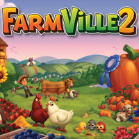

 Zynga is the San Francisco game company responsible for mobile games like FarmVille. As such, we would have also accepted “evil villain.”
In the Toy Story films, Emperor Zurg is the nemesis of Buzz Lightyear and “sworn enemy of the Galactic Alliance.”
Little bit of a trick question: Bluetooth is a wireless technology standard, but not a company. The technology, however, was named after an actual historical figure — King Harald "Bluetooth" Gormsson of Denmark.
Now defunct, Blue Fang was a video game developer known for its Zoo Tycoon series.
Based in Seattle, Conenza is a kind of social network for corporate alumni. For those late nights online when you’re wondering, whatever happened to Steve from accounting?
In the Doctor Who universe, Davros is the evil scientist who created the Doctor’s nastiest enemies, the Daleks. Exterminate!
Georgi Zhukov was commander of Soviet military forces in World War Two and led the final assault on Berlin in 1945.
An IT company out of Austin, Texas, Zenoss is a mashup of Zen — as in Buddhism — and OSS, as in Open Source Software.
GLaDOS stands for “Genetic Lifeform and Disk Operating System,” a twisted artificial intelligence in the videogame Portal.
Considered by many to be the first pharaoh of Egypt, his name means “Catfish.”
Giphy is a New York company that offers a database and search engine for animated GIFs.
Scroop is an insect-like alien who turns on his fellow crew members in the 2002 Disney film Treasure Planet. CORRECTION: The answer to this question originally said Scroop was in the film Treasure Island. Double nerd points to those who caught the error.